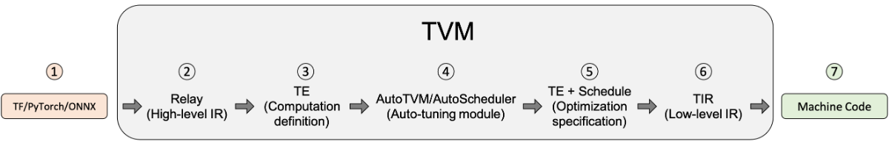
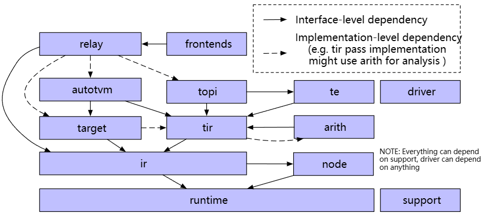

AI编译架构
本文最后更新于：2024年12月5日 早上
参考:
1. 编译器相关
编译器（Compiler）和解释器（Interpreter）：
- 编译器：将源代码整体编译为可执行文件（机器码），（可能经过预编译、编译、汇编、链接等环节，统一视作编译器的流程）最后由机器执行，会产生可以重复使用的中间文件和可执行文件
- 解释器：将源代码逐行解释成字节码并直接交由机器执行，不产生其他文件
编译器编译方式：JIT 和 AOT
- AOT：AheadOfTime 即静态编译，源代码先统一编译成机器码，再执行
- JIT：JustInTime 即动态编译，相比于传统 AOT，JIT 可以在程序运行过程中变运行边编译，具体流程可以参考 java。注意 JIT 与解释器的区别，解释器的粒度为一行源代码，而 JIT 的粒度为一个函数，JIT 编译的函数可以重复使用，而解释器每次都要重新解释一遍。
一个 GCC 的标准编译流程：
- 预处理：处理宏定义、文件包含、条件编译等信息，生成 .i 文件
- 编译：对 .i 文件进行语法分析，优化后生成 .s 汇编文件
- 汇编：将 .s 汇编文件汇编为机器码 .o 文件
- 链接：将程序运行所需要的目标文件、依赖库文件等统一打包链接成一个可执行文件
LLVM 在 GCC 的基础上发展而来，早期苹果使用 GCC ，后来由于 GCC 证书以及苹果的商用需要，只能放弃 GCC 而单独发展出 LLVM，LLVM 本质算一个编译器的框架系统，使用模块化的方式，将编译器的前端、优化器、后端等模块分开，可以根据需要进行组合，比如目前主流的 Clang 就是 LLVM 的前端，而 LLVM 的后端可以生成多种平台的机器码，LLVM 的优化器也可以单独使用，这样就可以根据需要进行组合，而不是像 GCC 那样，前端、优化器、后端都是一体的，不可分割。
LLVM is a sort of abstracted assembly language that compiler developers can target as a backend, and then LLVM itself comes packaged with a host of optimizations and “real” backend targets that can be compiled to. If you’re, say, the Rust programming language and you want to compile to x86, ARM, and WebAssembly without having to do all that work, you can just output LLVM code and then run LLVM’s compilation suite.
PASS：编译器对源代码进行完整的扫描，进行优化和分析的步骤
IR：Intermediate Representation 中间表达
编译器基本结构（主要是 LLVM，GCC 分的没有这么明确）
- Front End：词法分析、语法分析，将源代码转换为抽象语法树（AST），LLVM 使用 Clang 作为前端
- Optimizer：优化，将 IR 进行优化，使代码更高效（PASS 在这个地方）
- Back End：代码生成，将 IR 转换为目标代码（机器码）

相关 Chris Lattner：The Golden Age of Compilers
AI 编译器是介于机器学习框架与硬件中间的一层，用于解决众多框架与多种硬件之间的适配问题，主要架构
- Front-end：计算图转换，将不同框架下的源代码输出为 Graph IR 等高阶 IR（HLIR），重点在于抽象出硬件无关的计算和控制流程，以及数据张量、算子的支持
- Optimizer：对计算图进行一些算子融合、自动微分、并行切分、剪枝量化等优化，IR 间的相互转化，将高阶 IR 转换为低阶 IR（LLIR）
- Back-end：针对特定的机器，将低级 IR 转换为 LLVM IR，再利用 LLVM 基础结构生成优化的机器码
2. TVM
参考：
为什么使用 TVM：在模型部署时，众多的机器学习框架（Pytorch、TF、ONNX）与众多的平台（x86、arm、GPU）产生了众多不同的部署场景，而同一个模型在这些不同的场景之间是无法无缝切换的。TVM 的目标就是将这些不同的框架与平台进行统一，使得模型部署更加简单。
TVM 想要解决的问题：模型部署的可移植性问题、特定平台的硬件优化问题、软件栈的支持问题
编译流程


- TVM前端将如ONNX、Pytorch下的模型引入到IRModule中，将其翻译为relay（此时IRModule由一种高级表示relay.Function组成，一个relay.Function通常对应一个端到端的模型，可将其视为额外支持控制流、递归和复杂数据结构的计算图）
- Relay经过第一次转换，即Relay Passes，主要是与硬件无关的转换（常量折叠、死码消除等）
- 在Relay优化的后期，TVM会运行一系列pass，以FuseOps（融合操作）开始，加上设备注解、布局重写、存储重写、图到函数转换等，将relay逐步转成te
重要的是，张量表达式te本身并不是一个可以存储到 IRModule 中的自包含函数（self-contained function）。相反，它是 IR 的一个片段，可以拼接起来构建一个 IRModule。
- 将te转为tir，使用autoTVM
- tir经过一系列的tirPasses
- IRMoudle转换成对应设备的runtime.Module由PackedFunc组成
Relay IR：如 relay.Function，TVM 为了兼容上层的机器学习框架而引入的中间表达，一种高阶的图结构，包含了计算图和控制流的信息，这样的设计使得 TVM 可以对模型进行更加全面的优化。Relax 是下一代 Relay（Relay Next）
Tensor IR：如 tir.PrimFunc，TVM 为了兼容不同的硬件而引入的中间表达，一种低阶的图结构，包含了数据张量和算子的信息，这样的设计使得 TVM 可以对硬件进行更加全面的优化。
IRModule：是TVM堆栈中的主要数据结构，也是TVM编译的最小完整单元，在上层一般由一个或多个relay.Function组成。一个 RelayFunc 通常对应一个端到端的模型（可见MLC）。经过 TIR Pass 后一个 RelayFunc 可降级为多个 tir.PrimFunc 即元张量函数，这些函数可以被 TVM 优化器进行优化，最后转化为机器码。
Pass 转换
TVM转换流程的目的：优化（如常量折叠、死码消除，针对特定张量的布局转换、scale因子折叠），以及降级（将代码逐渐转化成更接近硬件的低级表示。
在 relay/transform 流程的后期，FuseOps 将端到端的函数（即 relay.Function）转化为一个个的算子（即 tir.PrimFunc），这个过程帮助将原始的编译问题分为了两个子问题：
- 算子的编译和优化
- 整体的执行流程：对生成的算子进行的调用
tir/transform 流程主要处理 tir.PrimFunc 的降级，例如有些 pass 将多维访问展平为一维指针访问，将内联函数扩展至特定硬件的函数等。也有一些pass的目的仍是优化，如访问索引简化和死码消除。
AutoTVM：搜索空间和基于学习的转换
上述的转换都是确定且基于某一规则的。TVM的目标之一是支持不同硬件平台的高性能代码优化，因此往往要研究尽可能多的优化选择，包括多维张量访问、循环分块策略、特殊加速器内存。
首先定义一组用来转换程序的操作，包括循环转换、内联、向量化等，称为调度原语，这种原语组成的集合定义了可用于程序优化的搜索空间。接下来，系统搜索不同的可能调度序列，找到最佳（极佳）的调度组合。
AutoTVM和AutoScheduler是TVM中的两个自动调度器，AutoTVM是基于遗传算法的调度器，AutoScheduler是基于机器学习的调度器。在官方文档中似乎统一为AutoTVM介绍了。
使用基于搜索的优化来处理初始 tir 函数生成问题。
AutoTVM是在tirPass之前进行的，经过AutoTVM后生成优化的PrimFunc，可以理解成到tirPass之后就不再进行高层优化了，只是针对硬件做一些特殊处理？
Target 转换
这一阶段将 tir 的 IRModule 转换为相应硬件的可执行形式。对于 x86 和 ARM 等后端，使用 LLVM IRBuilder 来构建内存中的 LLVM IR。还可以生成源代码级语言，例如 CUDA C 和 OpenCL。最后，还支持通过外部代码生成器将 Relay 函数（子图）直接转换为特定 target 。
重要的是，这一阶段的转换要尽可能轻量级，因为绝大多数转换和降级都在之前的阶段完成
Runtime 执行
TVM runtime 的主要目标是提供一个最小的 API，从而能以选择的语言（包括 Python、C++、Rust、Go、Java 和 JavaScript）加载和执行编译好的工件
1 | |
tvm.runtime.Module 封装了编译的结果。runtime.Module 包含一个 GetFunction 方法，用于按名称获取 PackedFuncs。
tvm.runtime.PackedFunc 是一种为各种构造函数消解类型的函数接口。runtime.PackedFunc 的参数和返回值的类型如下：POD 类型（int, float）、string、runtime.PackedFunc、runtime.Module、runtime.NDArray 和 runtime.Object 的其他子类。
tvm.runtime.Module 和 tvm.runtime.PackedFunc 是模块化 runtime 的强大机制。例如，要在 CUDA 上获取上述 addone 函数，可以用 LLVM 生成主机端代码来计算启动参数（例如线程组的大小），然后用 CUDA 驱动程序 API 支持的 CUDAModule 调用另一个 PackedFunc。OpenCL 内核也有相同的机制。
下面的代码片段给出了用相同接口执行端到端模型的示例：
1 | |
主要的结论是 runtime.Module 和 runtime.PackedFunc 可以封装算子级别的程序（例如 addone），以及端到端模型。
逻辑架构组件

3. MLIR
参考
某大佬博客